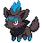

Shiny Pokemon, are, for all intensive purposes, just a recoloration. Or, a palette change.
A normal Zorua on the left, and a shiny Zorua on the right, for reference.
Starting in generation 4, a new shiny hunting method would be added to each pokemon game. Sometimes even multiple! However, typically, they would not return between games, except for certain staples.
You may be wondering why generation two is on this list, as I said that the first method came about in generation 4. Well... thats because in generation two, its less of a method, and more of an event. In specifically Pokemon Crystal, you could pick up the Odd Egg from the Daycare Man. From this egg,you roughly had a 7% chance to bag one of seven different available pokemon. It is good to note that you could only get one of these eggs per save file without any glitches.
In generation 4 they added the first shiny hunting method, PokeRadar. This was a monumental leap forward, as before this, you could only hunt for these shiny pokemon at full odds, which was 1 in 8192! With this method, you could hunt the pokemon available on any route, plus a few pokemon that are unique to the PokeRadar itself. Learning how to properly hunt using this method can certainly take some time. But once you get it down, it is actually quite simple.
Even though there werent any special shiny hunting methods implemented this generation, they added a few things that were pivotal moving forward in the franchise. They more widely implemented 2v2 wild battles, which aided the player in getting enconters at a faster rate. They also implemnted the shiny charm, which doubled the shiny rate for the player.
This generation added many different things to the already expanding shiny hunting methods. This was the generation that had by far and away the most shiny hunting methods so far, and still holds that crown.